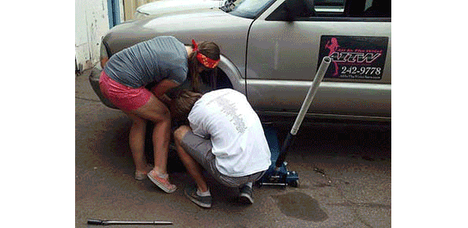
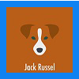
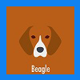
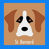
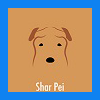
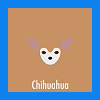

Saturday,
April 16th 2016
9 am to 5 pm-ish
Compete with other teams, help dogs, support small local business, and have an amazing day of fun trying some new things!
What is the 4-Legged Race??
The 4-Legged Race is a fun event to benefit Viva NM Rural Animal Rescue. Compete with teams to complete tasks around ABQ and be first to the finish line!
Each two-person team will choose the kind of route they want to follow - easy, medium, difficult, or fit & fearless - and will complete tasks that involve physical, creative, delicious, and brainy challenges. Your team will drive to a variety of great local businesses and try a sample of what they have to offer before you earn a clue to your next destination.
The team from each route to cross the finish line first wins a prize! You can then join us at a fun after-party to celebrate the winners, hang out, and recover from your day with some food and a tasty beverage.
How Can I Enter the Race?
You can enter online by filling out this form
How Much Does It Cost?
If you register and pay by March 26, 2016, you pay only $60 per team. After March 26th, the price is $75 per team. Early birds rock!! All entrants get a t-shirt and the everlasting glow of helping dogs in need - not to mention an awesomely fun day!
You can pay for your registration by cash, check payable to Viva NM Rural Animal Rescue, or PayPal to vivapaws@gmail.com or via the link below. If you pay by PayPal, please note in the special instructions to the seller that the funds are for registration for The 4-Legged Race. Deadline to register is April 12, 2016.
Race Routes
You'll start the race at the Explora Science Center at 1701 Mountain Road NW. Almost all routes include a full day of tasks with about 1 ½ to 2 hours of total driving time. Each route is different but includes a variety of physical, creative, mental and food tasks. Each route will have it’s own 1st place prize winners!
Teams may opt to take a penalty of 10 minutes if they attempt a task three times and cannot complete it. Very difficult tasks may offer an alternate task. Challenges should take from a few minutes up to about 30 minutes to complete.
All routes will include a lunch task about halfway through the day and possibly snacks. Vegetarian options will be available.
Bull Terrier Route
(Fit & Fearless - Difficult)
This route is for the most adventurous of our teams! If you are game to try anything, think you can handle 5-6 fairly difficult physical challenges, are ready to tackle a full day of tasks, and can laugh in the face of fear, then this is the route for you! You should be in good physical condition to attempt this route.
**If you have health concerns or serious phobias, then this is not the route for you. If you have specific questions, please contact us by private message on our Facebook page and we can guide you to the best route choice.

Jack Russell Route
(Difficult)
If you are up to the challenge of 5-6 fairly difficult physical tasks but don’t want to face some of the “scarier” challenges on our race, then this is a great choice!

Beagle or Husky Route
Beagle or Husky Route
(Medium)
This route will please anyone who wants a fun mix of 3-4 mildly demanding physical tasks, mental challenges and creative things to try.

Saint Bernard or Shar Pei Route
(Easy)
This route is an easy going mix of fun things to try. It will include 1-2 easy physical tasks, and a lot of new and interesting things to do. It is designed so that almost anyone can perform the tasks and complete the route, so give it a try!

Chihuahua Route
(Easy ½ Day)
This route will include 1-2 easy physical tasks, and a lot of new and interesting things to do. It is designed so that almost anyone can perform the tasks and complete the route in half the time it takes for the other routes. The route should be completed by around 1 pm and ends with lunch.
How Do I Contact You?
You can email us or send a private message on our Facebook page.